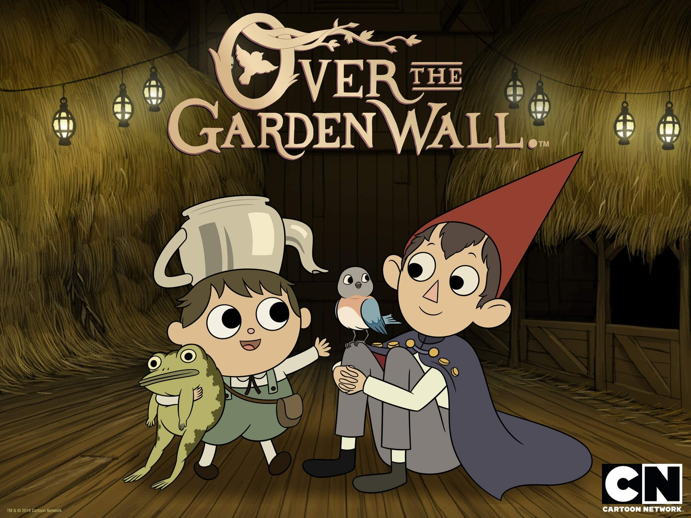

Over The Garden Wall
Más allá del jardín (Over the Garden Wall en su idioma original) es una miniserie animada estadounidense de 10 episodios, creada por Patrick McHale, y transmitida en Cartoon Network. La miniserie se centra alrededor de dos hermanos que viajan a través de un extraño bosque con el fin de encontrar su camino a casa.
El show está basado en un cortometraje del mismo McHale titulado como Tome of the Unknown, que fue producido como parte de los cortos para programas en desarrollo de Cartoon Network Studios.